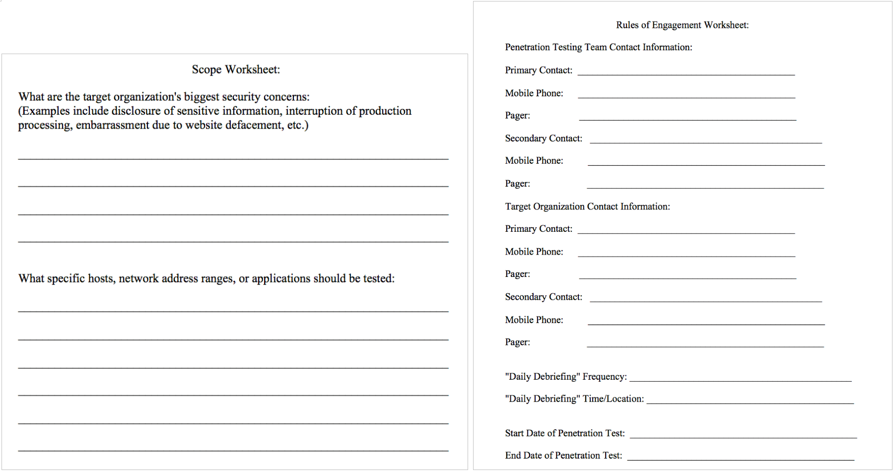

Lab 1.2: Scope and RoE Role Play
Objectives
- To analyze a penetration test Request for Proposal (RFP)
- To create a scope for a sample penetration test
- To create Rules of Engagement for that penetration test
Overview
For this interactive, role-playing lab, we will build Rules of Engagement and a scope for a sample penetration test by doing some interactive role playing. Your instructor will divide the class into teams of approximately two people. (If you are taking the class via SANS vLive, your instructor will play the part of the client during the lab; if you are taking the class via SANS OnDemand, you’ll receive both the client and the pen tester mystery sheets for which you can formulate the appropriate questions and answers for the scope and Rules of Engagement.)
The pen test client group is an organization that has issued an ambiguous RFP for a penetration testing project. The pen tester will ask the client to get more information about the project for scoping. Furthermore, both sides need to agree on the Rules of Engagement. The testers should also describe the risks and recommended approach for the project to the client.
You could view this lab as an external penetration testing company getting information to prepare a bid for a client, or you could view it as a set of internal testers preparing for a test of their own organization by discussing the test with the target business unit. Either approach is acceptable.
The clients and testers will work separately for about three to five minutes, reviewing the details of a mystery sheet that each person will receive. The client sheet will describe the client’s business with information that the testers should ask about. The tester sheet will describe the background of the testers to help them plan their approach.
The RFP
The RFP issued by the client company provides rather limited details about the test. Quite often, in the penetration testing business, testers are presented with limited information about a potential project up front, making the scoping task vitally important so that both the client and the testers are on the same page for the test.
The RFP includes the following facts:
- The test will be performed for Target Widgets, a manufacturing company with 5,000 employees and offices in three countries.
- The company wants a penetration test (either from an outside penetration testing company or from a technical group within the company; either is a valid approach for our purposes here).
- The goal of the project is to find security flaws that may have resulted from improper policies, practices, implementation, patch management, and so on.
- That’s it. The RFP includes no further information.
For the lab, the testers will receive a tester’s sheet, whereas the clients will receive a client’s sheet. The instructions on the sheet will provide more detail about the given organization, as well as certain items to cover during the scoping and Rules of Engagement meeting.
Make sure you take notes in your books and/or on the sheet because you must prepare for this meeting. If you have any further questions, please feel free to ask the instructor.
Important Notes
For this lab, keep in mind that we are focusing exclusively on scoping and setting the Rules of Engagement. The meeting is not meant to be adversarial. Engage in a positive discussion to determine the proper scope and Rules of Engagement, improvising where necessary.
The clients are NOT evaluating the skills or background of the penetration testers. Furthermore, the penetration testers are not trying to evaluate whether they want to engage in the project. The project has been awarded to the testing team, and both sides are delighted with the decision. The point here is to devise an appropriate scope and Rules of Engagement.
Do not discuss price, level of effort, or qualifications during this meeting because we need to focus on scope and Rules of Engagement.
The Scope and Rules of Engagement Meeting
To begin the meeting between clients and testers, run through the slides earlier in this session to devise a set of questions for scoping and setting Rules of Engagement. Work your way point by point through the book to make sure you’ve covered each issue.
In addition, you could work through this lab by filling out the templates for Scope and Rules of Engagement. They are included on the course USB drive in the cheat_sheets directory (Rules_of_Engagement_Worksheet.rtf and Scope_Worksheet.rtf). Please open those files and use them to guide your conversation. They are also linked here:

To get ready for the debriefing, record your answers to the mystery sheet questions on the worksheets.
The Debriefing
After finishing the meeting, we will conduct a debriefing session for the lab. The course instructor will lead a discussion, choosing people from each group to present the results of their scoping discussion during the lab.
In particular, you will be asked whether the issues on the mystery sheet were properly addressed during the scoping discussion. Also, did the clients ask any unexpected questions? How did the testers answer? Did the testers ask anything out of the ordinary, and how did the clients respond?
Unfortunately, there may not be time for every team to present every aspect of their results. Your instructor will help keep the conversation focused so that the most salient points will be addressed while keeping the class on schedule.